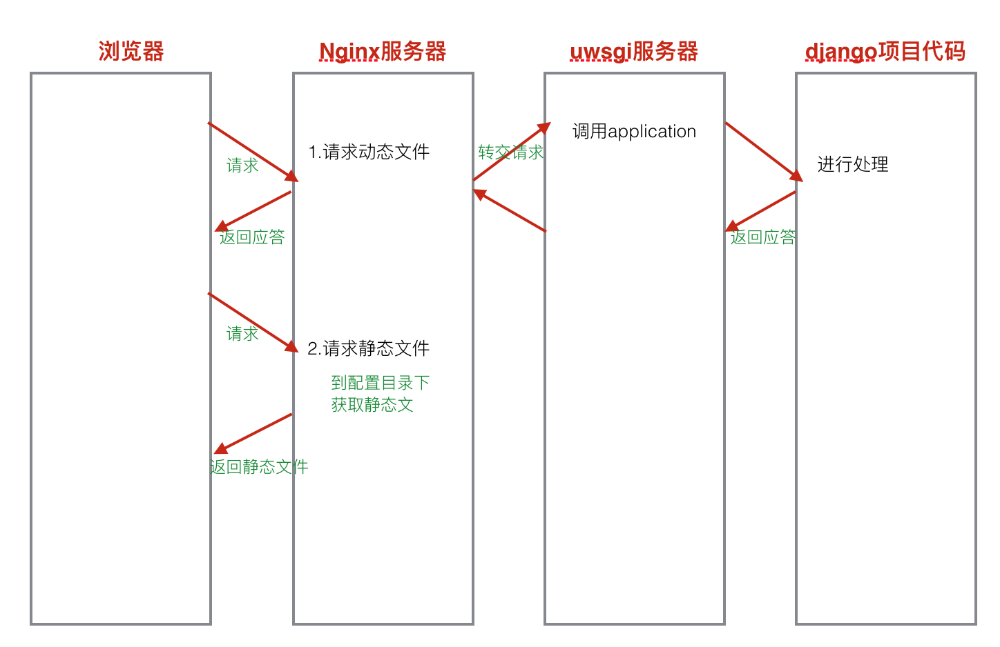
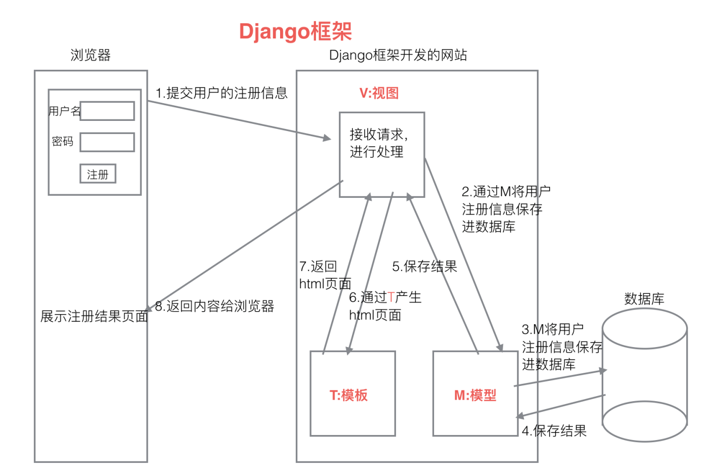

5.2 WEB后端实现
5.2 WEB后端实现
WEB后端理论上通过编写个http服务端，用户访问http服务器时，通过解析url来返回用户访问的画面，就可以搭建个轻量级的网站。此方法我在实际测试中也得到了验证，但是存在一个致命的问题就是用这种方式搭建起来的网站，在压力测试中，表现很差，仅仅能满足测试环境的需求。对于生产环境，远远要比这复杂。本设计使用“nginx+uwsgi+django”的模式，以实际生产环境为标准，进一步完善后端服务器，实现数据可视化。

Web后端框架如上图所示，浏览器访问web服务器请求首先会通过nginx负载均衡服务器，nginx会根据请求内容，将请求内容分为动态文件和静态文件两种，静态文件由nginx直接处理后返回给浏览器，动态文件会转发给uwsgi服务器来进行处理，uwsgi通过操作django框架完成动态数据的处理，将渲染后的数据再交给nginx，然后由nginx返回给浏览器。所以web后端实现分为三部分，分别为：django项目搭建，uwsgi服务器部署，nginx服务器部署。设计将围绕这三部分开展。
5.2.1 Django项目搭建
Django框架是一款用python语言写的web开源框架，它遵循MVT结构，且有着大量第三方插件的支持，并具有很强的可扩展性。可以极大的降低开发工作量，使开发者简单快速的开发数据库驱动的网站。
开发django项目，首先也要去下载搭建开发环境，具体步骤如下：
1.使用pip命令下载安装django安装包：
pip install django==1.8.2
2. 创建项目
mkdir pytest #创建用于存放django项目的文件夹
cd pytest #进入目标文件夹
django-admin startproject mesh_web #创建名为“mesh_web”的项目
3. 创建应用
python manage.py startapp mesh_data #创建名为“mesh_data”的应用

M:Model,模型， 和MVC中M功能相同，和数据库进行交互。
V:View,视图， 和MVC中C功能相同，接收请求，进行处理，与M和T进行交互，返回应答。
T:Template,模板， 和MVC中V功能相同，产生html页面。
5.2.2 模型设计
模型的作用主要是对数据库进行设计，在django中，访问mysql数据库不需要去手动的调用sql语句，django会根据模型文件，自动的完成数据库建表操作。用户只需要按规则编写模型文件即可。具体步骤 如下：
1.定义模型类
模型类定义在models.py文件中，继承自models.Model类。下面代码功能为建立一个名字为“Book”数据表，表中有存放的内容为书的标题和发布时间。1
2
3
4from django.db import models
class Book(models.Model):
title = models.CharField(max_length=20)
pub_date = models.DateField()2.生成迁移文件
完成模型类定义后，需要通过manage.py将定义好的模型类文件生成可以执行迁移文件，命令如下：python manage.py makemigrations
3.执行迁移命令
只有在执行迁移命令后，上述设计的数据表才能在数据库中完成创建。python manage.py migrate
服务器在收到这个请求之后，就一定对应着一个处理动作，这个处理动作就是帮我们产生页面内容并返回回来，这个过程是由视图来做的。对于django的设计框架MVT，用户在URL中请求的是视图，视图接收请求后进行处理，并将处理的结果返回给请求者。
5.2.3 视图设计
用户在浏览器中输入“www.xxxx.com”服务器在收到这个请求之后，就一定对应着一个处理动作，这个处理动作就是帮我们产生页面内容并返回回来，这个过程是由视图来做的。
对于django的设计框架MVT，用户在URL中请求的是视图，视图接收请求后进行处理，并将处理的结果返回给请求者。
视图函数的使用：
- 定义视图函数
视图函数定义在views.py中。
例：视图函数必须传入request参数，视图函数处理完成后，需要返回一个HttpResponse的类对象。1
2
3def index(request):
#进行处理
return HttpResponse('hello python')
进行url配置。url配置的目的是让建立url和视图函数的对应关系。url配置项定义在urlpatterns的列表中，每一个配置项都调用url函数。1
2
3
4from django.conf.urls import url
urlpatterns=[
url(r'^$',views.index),
]
- 定义视图函数
配置url时，有两种语法格式：
- a) url(正则表达式，视图函数名)
- b) url(正则表达式，include(应用中的urls文件))
工作中在配置url时，首先在项目的urls.py文件中添加配置项时，并不写具体的url和视图函数之间的对应关系，而是包含具体应用的urls.py文件，在应用的urls.py文件中写url和视图函数的对应关系。
5.2.4 模板设计
在django框架中，html网页页面代码统称为模板。模板的主要任务是实现外观表达，对于业务逻辑、数据处理，则应当由视图来完成。这种页面设计与业务逻辑分离的设计，有利于降低业务逻辑与页面显示之间的耦合，一个视图可以选择匹配到任意模板，一个模板也能被多个视图匹配。
模板设计其实在本章第一节“前端页面设计”就已经完成了，顾不在赘述。只需要将html文件导入django项目的template文件夹下，然后在django的设置文件中配置template文件夹的路径即可。